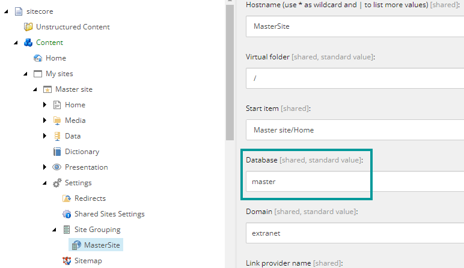

Create a headless site collection and site
The SXA content architecture includes headless site collections and sites.
The Sitecore JavaScript Rendering SDKs (JSS) lets front-end developers build a JavaScript app on top of Sitecore. With the Sitecore Headless Services, you can create headless site collections and sites that make it easier to work with JSS apps. The headless site collections and sites help you scaffold your site and help you to import your JSS app in a structured way.
The SXA content architecture includes site collections and sites. SXA supports multiple site collections, which means that you can run multiple sites on a single instance of Sitecore. Each site collection can include multiple related sites, for example, to support multiple brands for a single company or multiple languages or locations for a single brand. Organizations can support multiple languages through one-to-one translated versions or use a model with a separate site for each supported language.
For example, an international clothing company could have different site collections for the different brands of clothing and different sites for the specific countries.
If you have multiple sites that need to share resources they must be created within one site collection. With SXA's multiple site collections architecture, you can provide each site collection a dedicated share of the Sitecore instance including its data templates, configuration, user management, site collection individual functionality, and non-functional properties.
To create a headless site collection:
In the Content Editor, right-click the
Contentitem in the content tree, click Insert, and then click Headless Site Collection.In the wizard, enter a name for the site colllection, select the modules, and click OK.
The site collection is a top-level container for the sites underneath. Sites in the same site collection are related, for example, because they share the same set of templates or part of the media library. Sites are the items that represent the website and consist of pages, data, designs, and partial layouts.
To create a headless site:
In the Content Editor, right-click the site collection to which you want to add the site, click Insert , and then click Headless Site.
In the wizard, on the General tab, enter the name for the site.
Important
SXA site names cannot contain blank spaces.
Optionally, specify a host name, a virtual folder, and select the language for your site.
On the Modules tab, select the modules you need.
On the Settings tab, you can enter GraphQL end point and deployment secret, but it is best practice to do it later.
Click OK to create the headless site. The following site structure is created:
Folder
Subfolder
Description
Home
Contains the site pages.
Media
Includes all the media items available for the site.
Data
Contains the data sources that can be reused across multiple pages within the website.
Dictionary
Multilingual apps need a dictionary of static phrases that require translation. JSS imports translations to this folder.
Presentation
Page Designs
Headless sites come with SXA page design functionality.
Partial Designs
Headless sites come with SXA partial design functionality.
Placeholder Settings
Headless sites come with SXA placeholder settings functionality.
Settings
Contains the default configuration items that make the app work. Customization is possible. For example, if you want to use a new template for your pages.
Site Grouping
SXA lets you define sites using the Site Grouping items. Contains all the data needed for the site definition such as the host name, the start item, and the virtual folder.
By default, SXA headless sites use live mode. In live mode, Sitecore reads the website content from the master database.
If you want switch to the web database, you must publish both the API keys and the SXA headless site.
Next step: When you have finished creating your headless site collection and site, you can import classic JSS apps.
Note
You can create a duplicate of a site, by using the clone script.